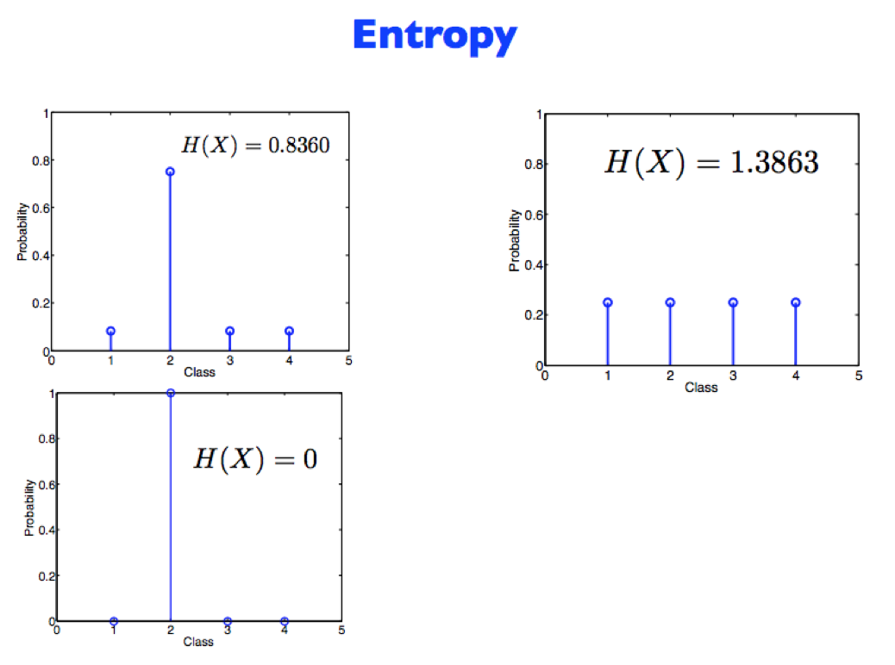
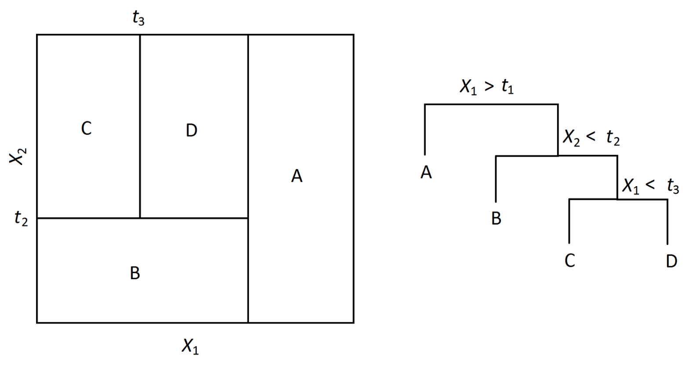
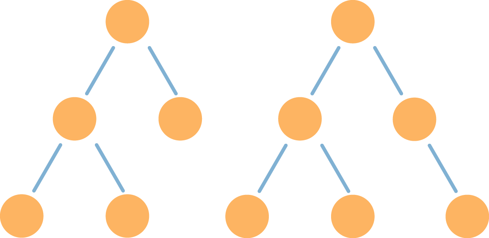
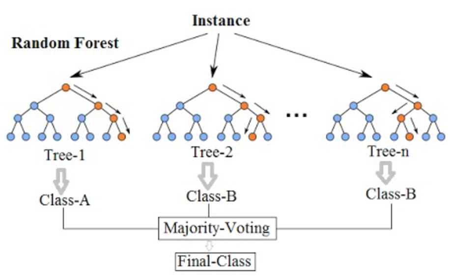

Monty Hall Problem
Monty Hall Problem
| What is really behind | What the result will be | |||
| Door 1 | Door 2 | Door 3 | Staying at door 1 | Switching to the door offered |
| Car | Goat | Goat | Wins car | Wins goat |
| Goat | Car | Goat | Wins goat | Wins car |
| Goat | Goat | Car | Wins goat | Wins car |
| Chance of getting the car: | $1/3$ | $2/3$ | ||
What is Machine Learning?
Computers algorithms that learn patterns in your data.
Note:
Computers are vulnerable to making mistakes, like humans (will talk about this at the end)
Decision Making
Model this in Python?
if salary < 50k:
Decline offer
else if salary > 50k and commute > 1 hr
Decline offer
Decision Tree
Really, it's an upside tree (leaves on bottom)
Leaf: Terminal node (no child)
Internal Node: Splits the predictor space
Choosing a Restaurant
| Examples | Attributes | Target Wait | |||||||||
| Alt | Bar | Fri | Hun | Pat | Price | Rain | Res | Type | Est | ||
| $X_1$ | T | F | F | T | Some | F | T | French | 0-10 | T | |
| $X_2$ | T | F | F | T | Full | F | F | Thai | 30-60 | F | |
| $X_3$ | F | T | F | F | Some | F | F | Burger | 0-10 | T | |
| $X_4$ | T | F | T | T | Full | F | F | Thai | 10-30 | T | |
| $X_5$ | T | F | T | F | Full | F | T | French | >60 | F | |
| $X_6$ | F | T | F | T | Some | T | T | Italian | 0-10 | T | |
| $X_7$ | F | T | F | F | None | T | F | Burger | 0-10 | F | |
| $X_8$ | F | F | F | T | Some | T | T | Thai | 0-10 | T | |
| $X_9$ | F | T | T | F | Full | T | F | Burger | >60 | F | |
| $X_{10}$ | T | T | T | T | Full | F | T | Italian | 10-30 | F | |
| $X_{11}$ | F | F | F | F | None | F | F | Thai | 0-10 | F | |
| $X_{12}$ | T | T | T | T | Full | F | F | Burger | 30-60 | T | |
Which attribute to split?
Patrons is a better choice because it gives more information about the classification
Goal: Minimize Entropy
$H[X] = -\sum_{k=1}^K P(X = a_{k})*log(P(X = a_{k}))$
Depth
- Depth: Longest path from root to a leaf node
- If too deep, can overfit
- If too shallow, underfits
Create trees
Grow tree until stopping criteria reached (max depth, minimum information gain, etc.)
Greedy, recursive partitioning
Comparison
Pros
- Interpretable
- Simple
Cons
- Poor accuracy
- High variance (if change training data a little, tree structure changes drastically)
Bias vs Variance

Bagging
Averaging a set of observations reduces variance
But we only have one training set... or do we?
Bootstrap
Simulate new datasets:
- Take samples (with replacement) from original training set
- Repeat n times

The 632 rule
Sample has $n$ elements.
Probability of getting picked:
Probability of not getting picked:
Sample $n$ elements with replacement, probability of not getting picked in the sample: $(1-\frac{1}{n})^n$
As ${n\to\infty}$, approaches $\frac{1}{e}\approx.368$
Thus, .632 of the data points in your original sample show up in the Bootstrap sample (the other .368 are duplicates)
Bootstrap samples
Each bootstrap sample:
n=100, drawing WITH replacement
from original sample
Bagging
- Train a tree on each bootstrap sample, and average their predictions (Bootstrap Aggregating)
- Can grow deep trees!
Random Forests
- Like bagging, but removes correlation among trees
- At each split, considers only a subset of predictors
Random Forests
Let's build a classifier


What did the computer learn?

A grass classifier!
Overfitting
- Superstition is overfitting to your training data
Underfitting
- Failing to learn from your mistakes = underfitting
Sexiest job of the 21st century?
I keep saying the sexy job in the next ten years will be statisticians. People think I’m joking, but who would’ve guessed that computer engineers would’ve been the sexy job of the 1990s?
-Google’s Chief Economist Hal Varian (2009)
Data Scientist vs. Statistician?
A data scientist is a statistician that lives in San Francisco
Data science is statistics on a Mac
A data scientist is someone who is better at statistics than any software engineer and better at software engineering than any statistician
Plus, they are paid more. Mean salary: 120,000 and Median salary: 126,000
Right or left skewed?
Plans after graduation?
Grad school? Departmental Scholars
Industry? Check out data science bootcamps!